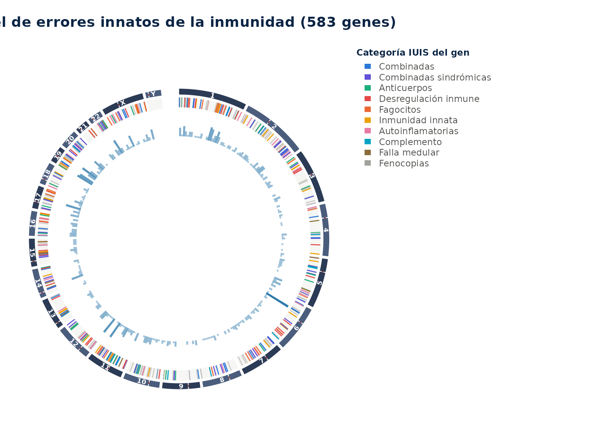
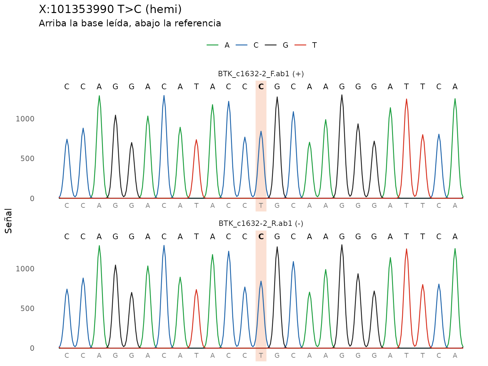
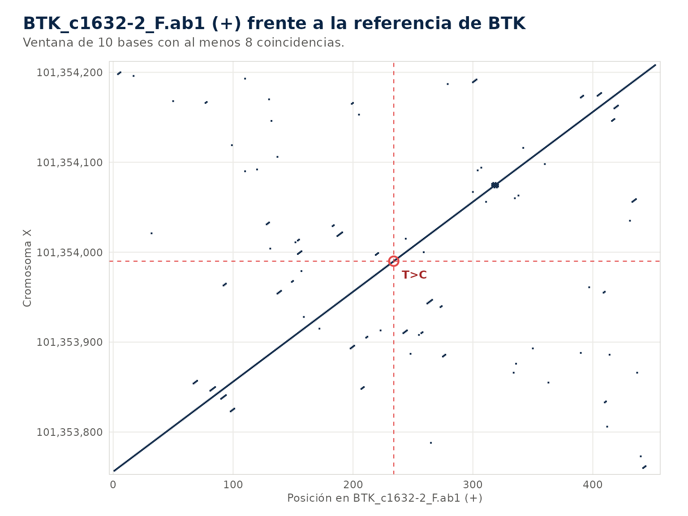
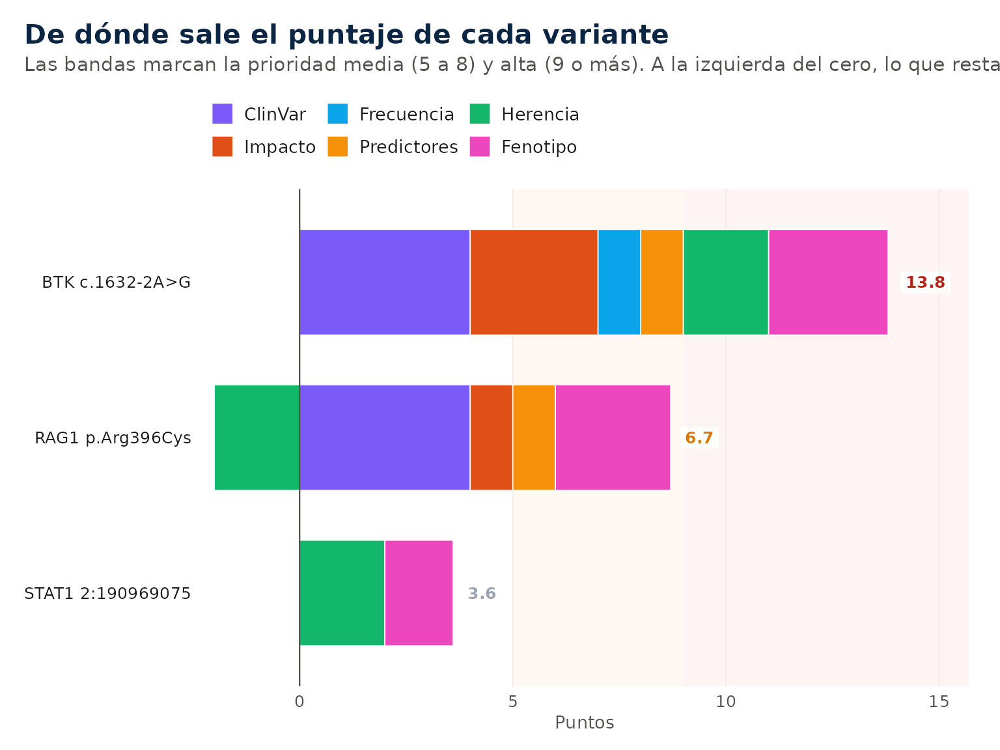
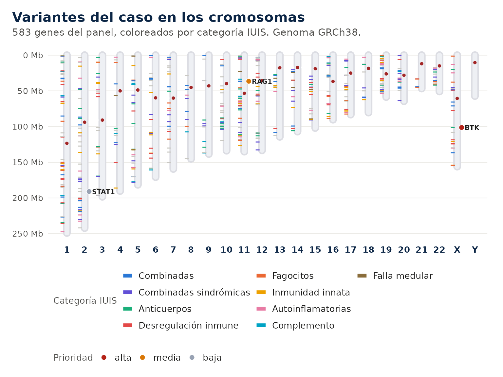
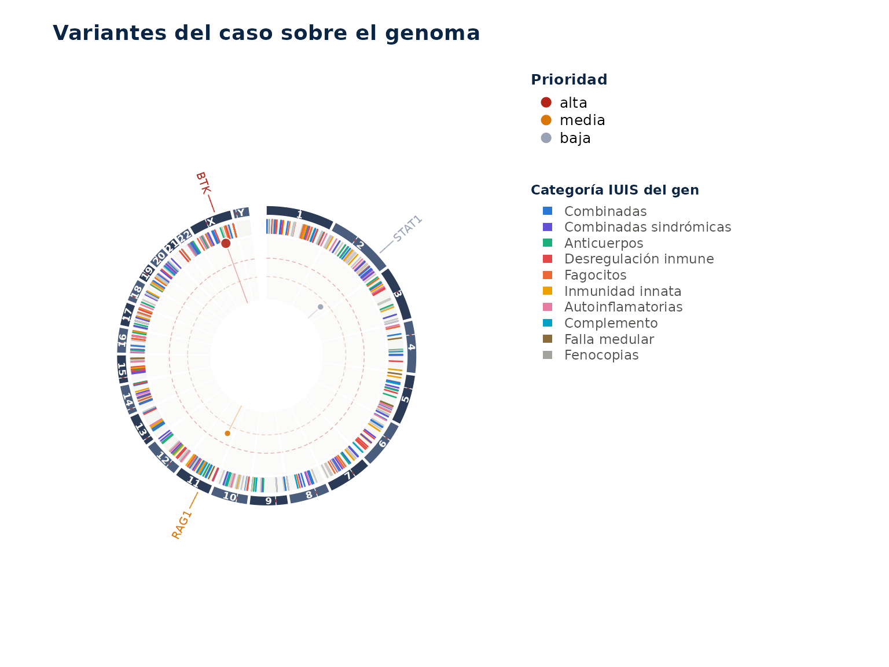

Ejemplo mínimo. Dos cromatogramas de BTK de una portadora, sin conexión.
ab1 <- iei_ejemplo_sanger("het")
#> Cromatogramas de ejemplo en /tmp/Rtmp8mUYNl/sanger_1d26a34b165.
ref <- system.file("extdata", "btk_referencia.fa", package = "ieiprio")
v <- iei_sanger(ab1, gen = "BTK", sexo = "F", referencia = ref)
#> BTK_c1632-2_F.ab1: hebra +, 461 bases alineadas en X:101353757-101354217,
#> identidad 99.8%.
#> BTK_c1632-2_R.ab1: hebra -, 461 bases alineadas en X:101353758-101354218,
#> identidad 99.8%.
v
#> # A tibble: 1 × 16
#> muestra gen chr pos id ref alt genotipo qual dp gq ab
#> <chr> <chr> <chr> <int> <chr> <chr> <chr> <chr> <dbl> <dbl> <dbl> <dbl>
#> 1 sanger BTK X 1.01e8 NA T C het 45 NA NA 0.445
#> # ℹ 4 more variables: filtro <chr>, build <chr>, lecturas <int>, fuente <chr>
iei_cromatograma(v)
La variante es X:101353990 T>C, que en el transcrito MANE de BTK es c.1632-2A>G. Las dos lecturas la ven como pico doble.
1. Qué hace el paquete
ieiprio ordena y explica variantes en los genes de los
errores innatos de la inmunidad. Recibe un VCF, cromatogramas Sanger, un
FASTA, una secuencia escrita o el texto de un informe. Anota cada
variante con Ensembl VEP, ClinVar y gnomAD, la prioriza según la
evidencia y el fenotipo del caso y devuelve una tabla con el motivo de
cada punto, los criterios ACMG/AMP sugeridos y un reporte HTML por
paciente.
Solo usa lo que sale de la secuencia y de bases de datos curadas. No recibe antecedentes familiares ni exámenes clínicos, porque no se pueden verificar en la secuencia y vuelven el análisis menos reproducible.
La guía Interpretación de resultados explica cómo leer la salida, Método y parámetros describe los cálculos y Casos de ejemplo trae tres análisis completos para copiar.
Herramienta de apoyo e investigación. No es un informe diagnóstico ni reemplaza la clasificación ACMG/AMP hecha por un especialista.
2. Fundamentos
2.1 Los errores innatos de la inmunidad
Los errores innatos de la inmunidad (EII) son enfermedades causadas por variantes en genes del desarrollo o la función del sistema inmune. Se conocen más de 500, casi todas monogénicas. Se manifiestan como infecciones graves o recurrentes, autoinmunidad, autoinflamación, alergia grave, linfoproliferación o susceptibilidad al cáncer. La misma enfermedad puede deberse a genes distintos y un mismo gen puede dar cuadros diferentes, por eso el genotipo se cruza siempre con el fenotipo.
Una variante altera el gen de dos maneras. En la pérdida de función la proteína falta o no trabaja. En la ganancia de función trabaja de más o de otra forma, como STAT1 en la candidiasis mucocutánea crónica o PIK3CD en el síndrome de PI3K delta activada. El mecanismo cambia qué variantes se esperan, porque una variante nula no produce una enfermedad por ganancia de función.
| Herencia | Qué se espera encontrar | Ejemplo |
|---|---|---|
| Autosómica recesiva (AR) | Dos variantes en el gen, homocigotas o una en cada copia | RAG1, ADA, DCLRE1C |
| Autosómica dominante (AD) | Una variante basta | STAT3, CTLA4, NFKB1 |
| Ligada al X (XL) | Una variante hemicigota en el varón | BTK, CYBB, WAS, IL2RG |
| Mitocondrial (MT) | Variante en el ADN mitocondrial | Raras en EII |
2.2 La clasificación IUIS
El comité de expertos de la International Union of Immunological Societies clasifica los EII en diez categorías según el componente del sistema inmune afectado. El paquete asigna cada gen del panel a su categoría, la usa como alternativa al fenotipo HPO y le da color a los gráficos.
| Categoría | Grupo | Genes representativos |
|---|---|---|
| 1 | Inmunodeficiencias que afectan la inmunidad celular y humoral | RAG1, RAG2, IL2RG, ADA |
| 2 | Inmunodeficiencias combinadas con rasgos sindrómicos | WAS, ATM, STAT3 |
| 3 | Deficiencias predominantemente de anticuerpos | BTK, CD79A, TNFRSF13B |
| 4 | Enfermedades de desregulación inmune | FOXP3, PRF1, CTLA4 |
| 5 | Defectos congénitos de fagocitos | CYBB, NCF1, ELANE |
| 6 | Defectos de la inmunidad intrínseca e innata | IFNGR1, IL12RB1, STAT1 |
| 7 | Enfermedades autoinflamatorias | MEFV, NLRP3, TREX1 |
| 8 | Deficiencias del complemento | C1QA, C2, CFH |
| 9 | Falla medular | DKC1, GATA2 |
| 10 | Fenocopias de EII | Autoanticuerpos y variantes somáticas |

El anillo exterior son los cromosomas. El siguiente marca cada gen del panel con el color de su categoría y el interior cuenta cuántos genes hay en cada región.
2.3 Tecnologías de secuenciación
Cada tecnología mira una parte distinta del genoma y deja huecos distintos.
| Tecnología | Qué detecta bien | Qué se le escapa | Entrada en ieiprio |
|---|---|---|---|
| Sanger | Variantes puntuales e indels en un amplicón | Deleciones del amplicón entero, mosaicos bajos | iei_sanger() |
| Panel de genes | Variantes en los genes elegidos con alta cobertura | Genes fuera del panel | iei_leer_vcf() |
| Exoma | Variantes en casi todos los exones | Intrones profundos, promotores, CNV pequeñas | iei_leer_vcf() |
| Genoma | Exones, intrones y CNV con cobertura pareja | Regiones repetitivas y pseudogenes | iei_leer_vcf() |
2.4 Del archivo a la variante
Un VCF describe cada posición con el cromosoma, la posición, el alelo
de referencia y el alternativo. Para cada muestra trae el genotipo
(0/1 heterocigoto, 1/1 homocigoto) y medidas
de calidad. La profundidad (DP) es el número de lecturas que cubren la
posición. La calidad del genotipo (GQ) es la confianza del programa en
ese genotipo en escala Phred. La fracción alélica (AB) es la proporción
de lecturas con el alelo alternativo, que ronda 0.5 en un heterocigoto
verdadero. Una fracción baja sugiere un artefacto o un mosaico.
La calidad Phred expresa la probabilidad de error como . Q20 es un error en 100 y Q30 uno en 1000. La misma escala mide la calidad de cada base en un cromatograma Sanger.
3. Instalación
ieiprio necesita R 4.2 o más nuevo y se instala desde
GitHub.
install.packages("pak")
pak::pak("Gentlenmoron/ieiprio")Las dependencias obligatorias son cli, httr2, jsonlite, rlang y tibble. Las demás se usan en tareas puntuales y el paquete avisa cuando falta alguna.
| Paquete | Uso |
|---|---|
| ggplot2, plotly | Gráficos estáticos e interactivos |
| circlize | Genoma en círculo y diagramas de cuerdas |
| patchwork | Paneles combinados, como el oncoplot |
| ragg | Imágenes de los cromatogramas dentro del reporte |
| pdftools, xml2 | Lectura de informes en PDF y Word |
| writexl | Exportación a Excel |
| shiny, bslib, DT | Aplicación interactiva |
| GenomicRanges | Conversión a GRanges
|
4. Privacidad y trabajo sin conexión
Para anotar, el paquete consulta servicios públicos y les envía solo coordenadas genómicas o nombres de genes. El código de la muestra, el fenotipo y el archivo completo nunca salen de la computadora.
| Servicio | Datos enviados | Uso |
|---|---|---|
| Ensembl VEP | Cromosoma, posición y alelos | Consecuencia, HGVS, frecuencias y predictores |
| Ensembl REST | Región o gen | Secuencia de referencia y dominios de proteína |
| NCBI ClinVar | Nombre del gen | Variantes conocidas del gen |
| gnomAD | Variante y nombre del gen | Homocigotos sanos, FAF95 y restricción |
| PanelApp | Número del panel | Actualización del panel |
Con options(ieiprio.sin_red = TRUE) ninguna función
consulta servicios externos y los campos que dependen de ellos quedan
vacíos. La búsqueda por fenotipo, el filtrado, la priorización y el
reporte funcionan igual, porque PanelApp y HPO vienen dentro del
paquete. Para Sanger se pasa la referencia en referencia y
para anotar se usa la salida de un VEP local en
vep_json.
options(ieiprio.sin_red = TRUE)Las respuestas de cada servicio quedan en una caché en la carpeta de
usuario de R, así que repetir un análisis no vuelve a consultar.
iei_limpiar_cache() la borra.
5. Datos de entrada
Todas las entradas terminan en la misma tabla, con una fila por variante. Lo que sigue funciona igual sin importar el origen.
| Entrada | Formatos | Función |
|---|---|---|
| Secuenciación masiva | VCF y VCF comprimido, GRCh37 o GRCh38 | iei_leer_vcf() |
| Secuenciación Sanger |
.ab1, .scf, FASTA o secuencia escrita |
iei_sanger() |
| Informes | PDF, Word, texto o variantes en HGVS | iei_variantes() |
Conviene indicar siempre el sexo. En un varón, una variante homocigota en el X fuera de las regiones pseudoautosómicas pasa a hemicigota, y esa distinción decide la lectura de genes como BTK, CYBB o WAS.
El paquete trae dos ejemplos. iei_ejemplo_vcf() es un
exoma ficticio de un varón con hipogammaglobulinemia e infecciones
recurrentes, con cinco variantes reales de ClinVar y unas 4000 de fondo.
iei_ejemplo_sanger() escribe los cromatogramas directo y
reverso de un amplicón de BTK con la variante causal del mismo caso, a
partir de la referencia GRCh38 que viene en
inst/extdata/btk_referencia.fa.
| Rol | Gen | Variante | ClinVar |
|---|---|---|---|
| Causal | BTK | c.1632-2A>G | 265455 |
| Portador | RAG1 | c.1186C>T (p.Arg396Cys) | 13144 |
| Incierta | STAT1 | c.*1628A>G | 333246 |
| Benigna | BTK | c.*334T>G | 367692 |
| Benigna | CYBB | c.1314+19C>T | 35968 |
6. Análisis de un VCF
6.1 Lectura
vcf <- iei_leer_vcf(iei_ejemplo_vcf(), sexo = "M")
vcf
#> # A tibble: 4,094 × 15
#> muestra chr pos id ref alt genotipo qual dp gq ab
#> <chr> <chr> <int> <chr> <chr> <chr> <chr> <dbl> <dbl> <dbl> <dbl>
#> 1 EJEMPLO01 1 1605175 NA G C hom_alt 234 52 74 1
#> 2 EJEMPLO01 1 1617029 NA T A hom_alt 315 45 99 1
#> 3 EJEMPLO01 1 2547757 NA C T hom_alt 667 43 90 1
#> 4 EJEMPLO01 1 3239502 NA G C het 780 46 83 0.630
#> 5 EJEMPLO01 1 4235075 NA A C het 245 56 99 0.625
#> 6 EJEMPLO01 1 4256441 NA A G hom_alt 296 16 82 1
#> 7 EJEMPLO01 1 6010805 NA C T hom_alt 278 26 77 1
#> 8 EJEMPLO01 1 6129328 NA T C het 400 9 75 0.556
#> 9 EJEMPLO01 1 6429026 NA A G het 695 68 74 0.5
#> 10 EJEMPLO01 1 6891176 NA A G het 891 36 83 0.611
#> # ℹ 4,084 more rows
#> # ℹ 4 more variables: filtro <chr>, build <chr>, gt <chr>, ps <chr>6.2 Verificación del sexo
iei_verificar_sexo(vcf)
#> # A tibble: 1 × 6
#> muestra sexo_declarado sexo_inferido frac_het_x n_variantes_x concordante
#> <chr> <chr> <chr> <dbl> <int> <lgl>
#> 1 EJEMPLO01 M M 0 139 TRUEEl sexo declarado se compara con el que se estima por la proporción de heterocigotos en el cromosoma X. Una discrepancia sugiere un error de identidad de la muestra.
6.3 Filtrado
filtrado <- iei_filtrar(vcf)
iei_bitacora(filtrado)
#> # A tibble: 4 × 3
#> paso filas descartadas
#> <chr> <int> <int>
#> 1 Inicial 4094 0
#> 2 Genotipo 4094 0
#> 3 Panel 5 4089
#> 4 Calidad 5 0Quedan las variantes en genes del panel con buena calidad técnica. Por defecto son los genes con evidencia verde del panel 398 de PanelApp, profundidad de al menos 10 lecturas, calidad de genotipo de 20 y fracción alélica de 0.2 en heterocigotos. La bitácora cuenta cuántas variantes quedan en cada paso.
6.4 Anotación
anotado <- iei_anotar(filtrado)
#> Consultando Ensembl VEP (GRCh38) para 5 variantes.
anotado <- iei_filtrar_frecuencia(anotado)
anotado[, c("gen", "hgvs_c", "consecuencia", "af_gnomad", "clinvar")]
#> # A tibble: 3 × 5
#> gen hgvs_c consecuencia af_gnomad clinvar
#> <chr> <chr> <chr> <dbl> <chr>
#> 1 STAT1 NA downstream_gene_variant 0.0000263 uncert…
#> 2 RAG1 ENST00000299440.6:c.1186C>T missense_variant 0.0000376 pathog…
#> 3 BTK ENST00000308731.8:c.1632-2A>G splice_acceptor_variant NA pathog…La anotación agrega la consecuencia en el transcrito, la nomenclatura HGVS, la frecuencia en gnomAD, ClinVar y los predictores REVEL, AlphaMissense y SpliceAI. El filtro de frecuencia descarta después las variantes demasiado comunes para una enfermedad rara, con un corte que depende de la herencia del gen.
6.5 Priorización
prior <- iei_priorizar(anotado, fenotipo = c("agammaglobulinemia", "neumonía recurrente"))
#> ℹ Fenotipo interpretado como:
#> • agammaglobulinemia → HP:0004432 Agammaglobulinemia
#> • neumonía recurrente → HP:0006532 Recurrent pneumonia
prior
#> Resultado de ieiprio • 1 muestra, 3 variantes
#> Genoma GRCh38 • Ensembl VEP 116 • prioridad alta 1, media 1, baja 1
#> # A tibble: 3 × 8
#> muestra gen hgvs_c hgvs_p genotipo puntaje categoria acmg
#> <chr> <chr> <chr> <chr> <chr> <dbl> <chr> <chr>
#> 1 EJEMPLO01 BTK c.1632-2A>G NA hemi 13.8 alta PVS1_Stron…
#> 2 EJEMPLO01 RAG1 c.1186C>T p.Arg396Cys het 6.7 media PM1_Suppor…
#> 3 EJEMPLO01 STAT1 NA NA het 3.6 baja PM2_Suppor…La variante de BTK queda en prioridad alta. Rompe el sitio aceptor de splicing, ClinVar la clasifica como patogénica, falta en gnomAD y es hemicigota en un gen ligado al X. La de RAG1 queda en prioridad media, que es el tope para una sola variante en un gen recesivo, y la de STAT1 queda baja por estar en la región 3’ no traducida. Las dos benignas salen en el filtro de frecuencia o en el de ClinVar.
6.6 Reporte
iei_reporte(prior, file.path(tempdir(), "EJEMPLO01.html"), paciente = "EJEMPLO01")
#> Reporte de "EJEMPLO01" guardado en
#> /tmp/Rtmp8mUYNl/EJEMPLO01.html.El argumento paciente es el código de la muestra y nunca
un nombre. Con un VCF el reporte trae el control de calidad, la tabla
priorizada, una ficha por variante con el diagrama de la proteína, la
coincidencia con el fenotipo, el embudo del filtrado y las versiones de
todas las fuentes.
6.7 Todo en una llamada
res <- iei_analizar(iei_ejemplo_vcf(), sexo = "M", fenotipo = "agammaglobulinemia", carpeta = tempdir())
#>
#> ── ieiprio ─────────────────────────────────────────────────────────────────────
#> ℹ Leyendo ejemplo.vcf.gz
#> ℹ Filtrando 4094 filas
#> ℹ Anotando 5 variantes con Ensembl VEP
#> ℹ Fenotipo interpretado como:
#> • agammaglobulinemia → HP:0004432 Agammaglobulinemia
#> ✔ Prioridad alta 1, media 1, baja 1
#>
#> ✔ Reporte en /tmp/Rtmp8mUYNl/EJEMPLO01.htmliei_analizar() corre los pasos anteriores y deja un
reporte por muestra en la carpeta indicada.
7. Análisis de secuencias Sanger
sanger <- iei_sanger(iei_ejemplo_sanger(), gen = "BTK", sexo = "M", referencia = ref)
#> Cromatogramas de ejemplo en /tmp/Rtmp8mUYNl/sanger_1d2635283a0.
#> BTK_c1632-2_F.ab1: hebra +, 461 bases alineadas en X:101353757-101354217,
#> identidad 99.8%.
#> BTK_c1632-2_R.ab1: hebra -, 461 bases alineadas en X:101353758-101354218,
#> identidad 99.8%.
sanger
#> # A tibble: 1 × 16
#> muestra gen chr pos id ref alt genotipo qual dp gq ab
#> <chr> <chr> <chr> <int> <chr> <chr> <chr> <chr> <dbl> <dbl> <dbl> <dbl>
#> 1 sanger BTK X 1.01e8 NA T C hemi 45 NA NA 1
#> # ℹ 4 more variables: filtro <chr>, build <chr>, lecturas <int>, fuente <chr>iei_sanger() recorta los extremos de baja calidad, ubica
cada lectura en su hebra, la alinea contra la referencia y llama
variantes homocigotas, heterocigotas por picos dobles e indels. Sin
referencia baja la secuencia del gen o la región desde
Ensembl y la guarda en caché.
iei_cromatograma(sanger)
Cada traza tiene el color de su base. La franja marca la variante, arriba va la base leída y abajo la de referencia. Las lecturas reversas se muestran ya complementadas y en el sentido del genoma.
iei_dotplot(sanger)
El dot plot compara la lectura con la referencia por ventanas de 10 bases. La diagonal continua dice que la lectura cubre la referencia sin cortes. Una indel se vería como un salto de la diagonal, y la cruz roja marca la variante.
Una indel heterocigota produce picos dobles sostenidos desde el punto
del cambio. El paquete prueba los desfases posibles y llama la indel si
uno de ellos explica los picos. iei_consenso() reúne las
lecturas en una sola secuencia. Desde aquí el flujo es el mismo que con
un VCF.
vep <- system.file("extdata", "btk_vep.json", package = "ieiprio")
iei_priorizar(iei_anotar(sanger, vep_json = vep), fenotipo = "agammaglobulinemia")
#> ℹ Fenotipo interpretado como:
#> • agammaglobulinemia → HP:0004432 Agammaglobulinemia
#> Resultado de ieiprio • 1 muestra, 1 variante
#>
#> Genoma GRCh38 • Ensembl VEP local • prioridad alta 1, media 0, baja 0
#> # A tibble: 1 × 8
#> muestra gen hgvs_c hgvs_p genotipo puntaje categoria acmg
#> <chr> <chr> <chr> <chr> <chr> <dbl> <chr> <chr>
#> 1 sanger BTK c.1632-2A>G NA hemi 14 alta PVS1_Strong, PM2_…btk_vep.json es la respuesta de Ensembl VEP para esta
variante, guardada para que el ejemplo corra sin red. Con conexión basta
iei_anotar(sanger).
8. Variantes desde informes
iei_extraer_variantes(c(
"Se identificó NM_000061.3(BTK):c.1632-2A>G en hemicigosis.",
"También RAG1 p.Arg396Cys en heterocigosis y rs121908711."
))
#> # A tibble: 3 × 4
#> entrada tipo genotipo linea
#> <chr> <chr> <chr> <int>
#> 1 NM_000061.3:c.1632-2A>G hgvs_transcrito hemi 1
#> 2 rs121908711 rsid het 2
#> 3 RAG1:p.Arg396Cys gen_y_cambio het 2iei_variantes() lee PDF, Word o texto y reconoce
nomenclatura HGVS, rsID y el gen seguido del cambio. Si el texto dice el
genotipo, lo usa. Para una sola variante, iei_variante() la
ubica, la anota, la prioriza y muestra su ficha.
iei_variante("BTK c.1632-2A>G", genotipo = "hemi", fenotipo = "agammaglobulinemia")
#> ℹ Sin transcrito, "BTK:c.1632-2A>G" corresponde a varias posiciones. Al anotar
#> se conserva la que coincide con esa nomenclatura en el transcrito MANE.
#> ℹ Para evitarlo, indica el transcrito: "NM_000061.3:c.1632-2A>G".
#> ℹ Fenotipo interpretado como:
#> • agammaglobulinemia → HP:0004432 Agammaglobulinemia
#>
#>
#> ── BTK c.1632-2A>G ──
#>
#>
#>
#> • Proteina: -
#>
#> • Consecuencia: splice acceptor variant (HIGH)
#>
#> • gnomAD: ausente | ClinVar: pathogenic
#>
#> • Predictores: SpliceAI 0.99
#>
#> • Herencia del gen: XL | Genotipo: hemi
#>
#> • Fenotipos del gen: Agammaglobulinemia and isolated hormone deficiency;
#> Agammaglobulinemia, X-linked; Agammaglobulinemia, X-linked 1 (y 6 mas)
#>
#> → Puntaje 14 (alta): ClinVar patogénica (+4); impacto alto (+3); ausente en
#> gnomAD (+1); predictores a favor (SpliceAI 0.99) (+1); hemicigota en gen
#> ligado al X (+2); fenotipo parecido con Agammaglobulinemia, X-linked
#> (OMIM:300755), similitud 1.00 y 1 de 1 términos exactos (+3)
#>
#> → ACMG sugerido: PVS1_Strong, PM2_Supporting, PP3, PP49. CNV del VCF
head(genes_dificiles[, c("gen", "tipo")], 8)
#> # A tibble: 8 × 2
#> gen tipo
#> <chr> <chr>
#> 1 NCF1 pseudogen
#> 2 IKBKG pseudogen
#> 3 SBDS pseudogen
#> 4 PMS2 pseudogen
#> 5 C4A numero de copias
#> 6 C4B numero de copias
#> 7 CFH duplicacion segmentaria
#> 8 CFHR1 duplicacion segmentariaAlgunas causas frecuentes de inmunodeficiencia no son variantes
puntuales, como la deleción 22q11.2 o las deleciones grandes de BTK y
CYBB. Si el VCF trae CNV llamadas por otro programa como registros
simbólicos (<DEL>, <DUP>),
iei_cnv() las cruza con el panel y el reporte las muestra.
Los genes con pseudogenes o con número de copias variable están en
genes_dificiles, y la nota de cada variante lo
advierte.
10. Salidas
summary(prior)
#>
#> ── Resumen de ieiprio ──
#>
#> Genoma GRCh38, Ensembl VEP 116
#>
#> ── Variantes por prioridad
#> categoria
#> alta media baja
#> 1 1 1
#>
#> ── Por muestra
#> # A tibble: 1 × 5
#> muestra alta media baja principal
#> <chr> <int> <int> <int> <chr>
#> 1 EJEMPLO01 1 1 1 BTK
#>
#> ── Genes con mayor puntaje
#> # A tibble: 3 × 4
#> gen variantes mejor_puntaje mejor_categoria
#> <chr> <int> <dbl> <chr>
#> 1 BTK 1 13.8 alta
#> 2 RAG1 1 6.7 media
#> 3 STAT1 1 3.6 baja
#>
#> ── Criterios ACMG sugeridos
#> # A tibble: 6 × 2
#> criterio variantes
#> <chr> <int>
#> 1 PM2_Supporting 3
#> 2 PP3 2
#> 3 PP4 2
#> 4 PM1_Supporting 1
#> 5 PM5 1
#> 6 PVS1_Strong 1
#>
#> ── Filtrado
#> # A tibble: 6 × 3
#> paso filas descartadas
#> <chr> <int> <int>
#> 1 Inicial 4094 0
#> 2 Genotipo 4094 0
#> 3 Panel 5 4089
#> 4 Calidad 5 0
#> 5 Frecuencia 3 2
#> 6 ClinVar benigna 3 0
plot(prior)
El resultado de iei_priorizar() es una tabla, así que se
filtra y se grafica con las herramientas habituales de R. Las variantes
también se ven sobre los cromosomas o sobre el genoma en círculo. En el
cariograma cada raya a la izquierda de un cromosoma es un gen del panel
y cada punto a la derecha una variante del caso. En el círculo la
distancia al centro es el puntaje.
plot(prior, tipo = "cariotipo")
plot(prior, tipo = "circos")
iei_exportar() elige el formato por la extensión. Excel
guarda variantes, parámetros y fuentes en hojas separadas, VCF y BED
sirven para IGV y JSON produce un Phenopacket de GA4GH que leen Exomiser
y LIRICAL.
iei_exportar(prior, "EJEMPLO01.xlsx")
iei_exportar(prior, "EJEMPLO01.json")La aplicación interactiva reúne la búsqueda por fenotipo, la ficha de gen, la interpretación de una variante, el análisis de archivos con descarga del reporte y la validación de la búsqueda por fenotipo.
iei_app()11. Limitaciones
El paquete analiza variantes puntuales e indels pequeñas. Las CNV y las variantes estructurales aparecen solo si el VCF ya las trae llamadas, y la cobertura no se evalúa porque requiere el BAM. En Sanger no se detectan mosaicos por debajo del umbral de pico doble, y una indel heterocigota llamada por deconvolución se confirma con la otra hebra. Si el VCF no trae fase, dos heterocigotas en un gen recesivo quedan como un posible compuesto. Los criterios ACMG y su clase son sugerencias para un especialista, y la similitud de fenotipo se validó con casos simulados y no con una cohorte clínica.